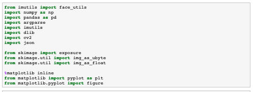
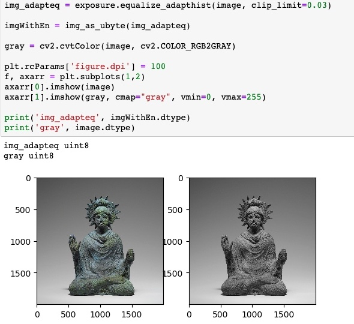
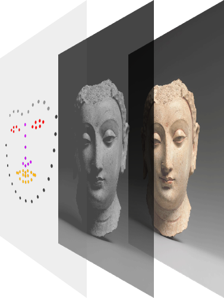
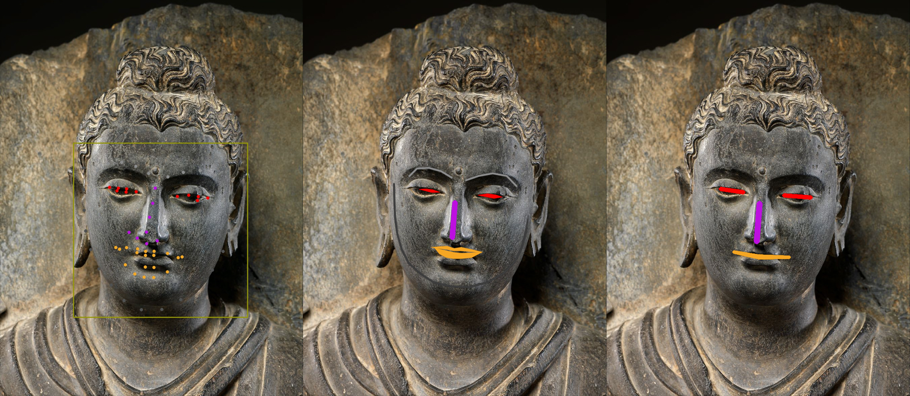

A data visualization by Dan Ran
Buddhas at the Met is a data visualization project studying the facial features of Met's collections of buddha sculptures, through computer vision imaging processing. This project seeks to understand how buddha sculptures reflect the religion's process of morphing and changing to adapt to different countries and cultures.
All the data of the Buddha sculptures and major images are requested from the Met's API. The facial data processing is conducted by Open-CV and Scikit-Image.
Scikit-image's pixel process functions are used to enhance the images.
Open-CV is used to extract facial information from Buddhas' faces. 68 landmarks are extracted from each face. 211 out of 416 faces are successfully extracted. They are clustered in 12 different culture regions, covering the main areas that Buddhism is commonly practiced.
Three different visualizations: face dots, lines & shapes, and face grid, are utilized to demonstrate and compare the facial features of Buddha sculptures.

Partner: The Metropolitan Museum of Art
Data Source: The Met Collection API
Date: 2019